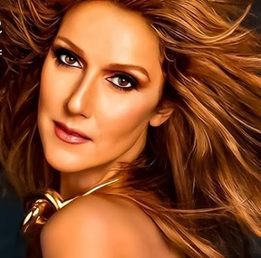

Conocida como Céline Dion y la «Reina de las Power Ballads», es una cantante canadiense. Reconocida por su poderosa y ágil voz, Dion es una de las cantantes más exitosas de todos los tiempos.
Nacida en el seno de una gran familia en Charlemagne, Quebec, Dion fue descubierta por su futuro mánager y esposo, René Angélil, y emergió como una estrella adolescente en su país natal con una serie de álbumes en francés durante la década de 1980.
Obtuvo reconocimiento internacional al ganar el Festival de la Canción de Eurovisión 1988, donde representó a Suiza con «Ne partez pas sans moi». Su primer álbum en inglés, Unison (1990), la estableció como una artista pop viable principalmente en América del Norte y en varios mercados de habla inglesa, mientras que The Colour of My Love (1993) la catapultó al estrellato mundial. Continuó su éxito a lo largo de los años 1990.
Celine Dion tiene una extensa discografía que incluye más de 27 álbumes de estudio (en inglés y francés).
Destacando éxitos mundiales como Falling into You (1996) y Let's Talk About Love (1997), con ventas millonarias. Su carrera abarca décadas, incluyendo álbumes icónicos como The Colour of My Love (1993) y el reciente Courage (2019)
Sus principales canciones:
Mira el video en YouTube:

Céline Dion es una de las artistas más premiadas de la historia, con una trayectoria que abarca más de cuatro décadas y múltiples reconocimientos internacionales. Sus grandes premios incluyen Grammy, Óscar, Billboard, American Music Awards y triunfos en festivales internacionales